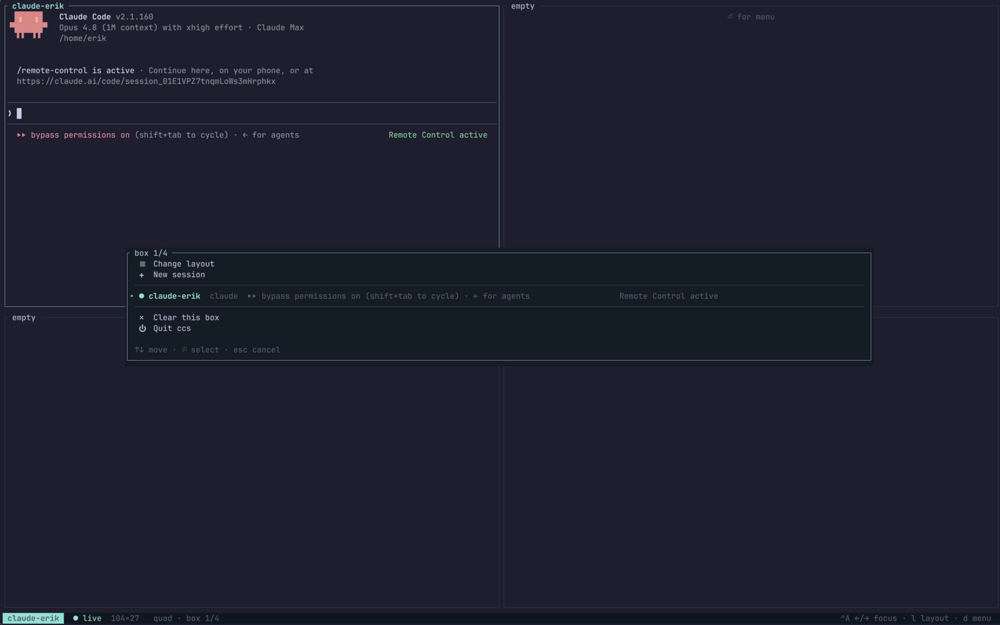
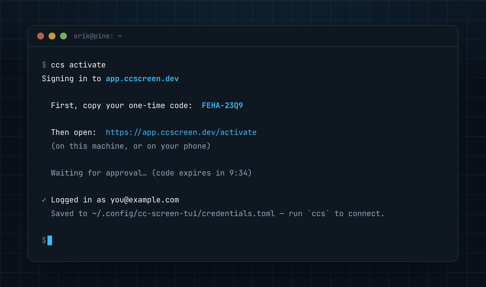
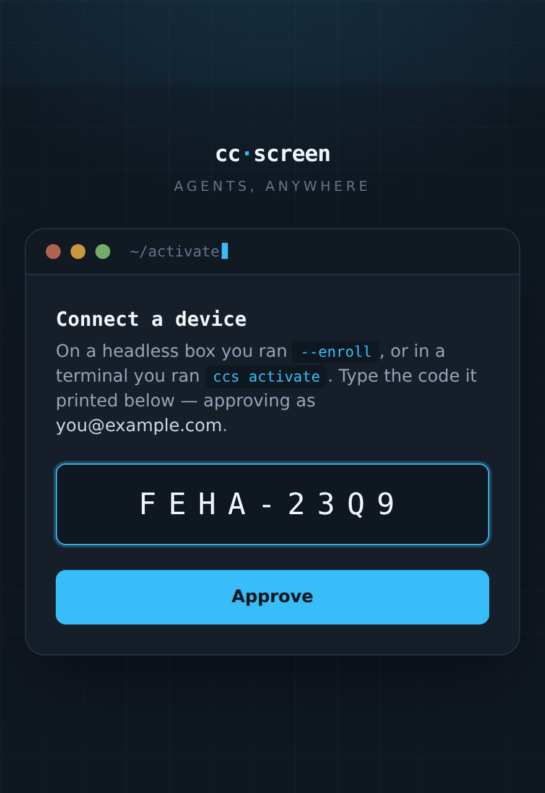

The ccs terminal client
ccs is a native terminal app that speaks to the same hub (or to a single
machine's agent directly, if you self-host without a hub). A session
switcher, a multi-pane grid with real scrollback, tmux-style keys — your
whole fleet without leaving the terminal.
Why not just tmux? tmux attaches you to one machine you can already reach;
ccs attaches you to every machine your hub can — over a single
outbound-only uplink, with agent-aware ready notifications — no inbound SSH
and no per-machine tmux sockets.

Install
curl -fsSL https://app.ccscreen.dev/ccs.sh | sh
drops ccs into ~/.local/bin and prints the sign-in command. (The generic
installer, if you'd rather not fetch through the hub:
curl --proto '=https' --tlsv1.2 -LsSf https://github.com/dibbla-agents/cc-screen-rust/releases/latest/download/cc-screen-tui-installer.sh | sh.)
It's a real terminal app — it needs an interactive TTY.
Connect (hosted — app.ccscreen.dev)
ccs activate
(or just ccs — with no sign-in yet it runs the activation itself, then
drops you straight into the switcher). It prints a short one-time code and a
URL, polls for your approval, and confirms the account it signed in as:

Open the URL from any logged-in browser — your phone is fine, and it works
over SSH because nothing has to open on the box itself — type the code, and
approve. That's it: ✓ Logged in as you@example.com, and plain ccs from
then on connects as you. Codes expire after 10 minutes; a fresh one is a
re-run away. It's the same code-approve gesture as enrolling a machine, just
signing in a terminal instead.

ccs logout signs the terminal out again — it revokes the credential
server-side and forgets it locally. You can also revoke any terminal from
the dashboard's Terminal clients list.
Connect (self-hosted)
Point it at your own endpoint with a static token:
ccs --server http://laptop:8839 # one machine's agent, directly
ccs --server http://hub:8840 --token … # your own hub (all machines)
The server URL and token are remembered, so from then on plain ccs
reconnects. This is the client token — the credential a browser or script
uses to talk to the hub (CCWEB_API_TOKEN on the server / --token on
cc-screen-hub install) — not a machine's uplink credential. A self-hosted
multi-tenant hub supports ccs activate too.
(--insecure accepts a self-signed certificate for an ad-hoc wss setup.)
Credentials
- Device sign-ins land in
~/.config/cc-screen-tui/credentials.toml— owner-only (0600), keyed per hub, never printed. The server URL lives inconfig.tomlnext to it. - Precedence when several sources exist:
--token>CCS_API_TOKEN>CCWEB_API_TOKEN>credentials.toml>api_tokeninconfig.toml. - Headless/CI use: set
CCS_API_TOKEN(or pass--token) and skipactivateentirely.
Using it
ccs opens in the switcher: every machine's sessions in one list, each
tagged with its machine and its latest one-line summary, plus create / kill /
rename / restore actions. Pick sessions into the grid — the same six
layouts as the web app, and panes from different machines can sit side by
side. Each pane is a full terminal emulator with multi-thousand-line
scrollback.
Jump straight to a session — handy from a script or muscle memory:
ccs alpha # attach directly (exact name, machine/name, prefix, or fuzzy)
In the switcher:
↑/↓orj/kmove ·Enterattach ·nnew ·x/ekill ·rrefreshR— rename the selected session (when the list is empty,Ropens the restorable-session picker to bring sessions back after a redeploy)
Inside the grid the prefix key is Ctrl-A (tmux-style):
Ctrl-A d— open the action menu (attach / rename / clear / layout)Ctrl-Athen a digit — switch layoutCtrl-A g— jump to a session that just went readyCtrl-A [— enter scrollback mode on the focused pane (PgUp/PgDn,k/j,g/Gtop/live,q/Escback to live); any printable key in normal mode snaps back to live- click or move spatially to focus panes
Everything else you type goes straight to the focused session's PTY.
Maintenance
ccs update # fetch the latest ccs build
ccs logout # sign this terminal out (revokes its credential)
ccs uninstall # remove the ccs binary + config
ccs --help # the full flag reference